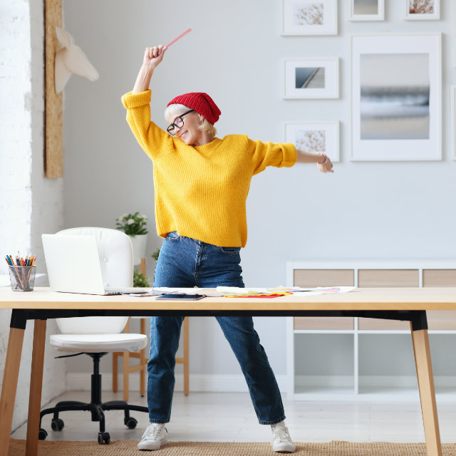

L'originalité des ateliers Wonderflow
Les ateliers Wonderflow s'adressent à tout gestionnaire ou leader qui souhaite développer sa confiance créative.

Une expérience holistique et ludique
Qui fait appel au mental, mais aussi corps et à l'émotionnel pour ressentir sa créativité et enforcer sa confiance créative.
Tout cela dans la joie et la bonne humeur!
Tournés vers l'action pour des resultats
Vous repartez avec votre propre plan 'action pour installer la créativité dans votre quotidien professionnel
Un accompagnement post atelier pour un effet durable
Après l'atelier, un suivi en groupe (2 x 90 min en ligne) est assuré pour vous accompagner face aux défis possibles auquel vous faites face et vous encouragez dans la mise en place de vote plan d'action.
Une approche introspective en movement originale et ludique
Cette approche s'appuient sur la connaissance des besoins actuels de l'entreprise, sur les découvertes de la neuroscience sur la créativité et des techniques de créativité éprouvées depuis des siècles.

respire
Ancrer le corps pour installer la présence avec des exercices de respiration et des movements simples de Taichi Qigone


écoute
Pratiquer l'écoute intérieure et se connecter à ses resources créatives en explorant la "calligraphie spontanée" à l'encre de Chine
crée
Adopter des attitudes et des comportements adaptés pour activer une posture créative au quotidien
un atelier Wonderflow nest pas:
- Un cours de gymnastique chinoise
- Un cours d'expression artistique ou d'art thérapie
- Un cours de philosophie ou de spiritualité
- Une prise de tête!
Afin de favoriser l'ouverture et le retour vers soi. Un nombre limité de professionnels (maximum 10 personnes) issus de diverses organisations et horizons, se retrouvent pendant 1 journée dans un lieu esthétique et inspirant, où règnent la bienveillance, l'ouverture d'esprit et le non-jugement.
Wonderflow, c'est...
Avant tout, un atelier Wonderflow est une expérience individuelle et non une activité de « team building » ; c'est pourquoi ces ateliers sont (inter-entreprises).
Ils favorisent la découverte de soi, mais aussi des autres participants, jamais rencontrés, comme dans un voyage en terre inconnue!
Et si vous faisiez une "pause" Wonderflow?
Cette pause en movement va vous permettre une connexion avec vote espace intérieur. Vote créativité, vous donnez des clés pour un quotidien plus créatif, et qui sait... une prise de conscience, une meilleure connaissance de vous-même un déclic, un éclair de génie?
